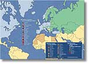

|
General information
on NATO and its partnerships
with neighbouring countries.
| Euro-Atlantic
Partnership Council (EAPC) |

All
NATO member countries, partner
countries and participants in
the Alliance's Mediteranean
Dialogue are shown on this
map. |
The Euro-Atlantic Partnership Council
(EAPC) is a multilateral forum where
NATO member and partner countries
meet on a regular basis to discuss
political and security-related issues
and develop cooperation in a wide
range of areas. At present, there
are 46 members: 19 NATO member countries
and 27 partner countries. All EAPC
members are members of the Partnership
for Peace programme, except for Tajikistan.
| Partnership
for Peace (PfP) |
Partnership for Peace (PfP) is the
basis for practical security cooperation
between NATO and individual Partner
countries (19+1). Activities include
defence planning and budgeting, military
exercises and civil emergency operations.
There are now 26 members of PfP, which
are all members of the EAPC.
The Mediterranean Dialogue aims to
enhance security and stability in
the region by creating good relations,
as well as better mutual understanding.
Seven Mediterranean countries currently
participate in this security dialogue
with NATO: Algeria, Egypt, Israel,
Jordan, Mauritania, Morocco and Tunisia..
NATO and Russia made a reciprocal
commitment to help build a stable,
secure and undivided continent on
the basis of partnership and mutual
interest, when they signed the 1997
Founding Act on Mutual Relations,
Cooperation and Security. The
Permanent Joint Council was set
up as a forum for consultation and
cooperation between the Alliance
and Russia.
In their 1997 Charter
on a Distinctive Partnership, NATO
and Ukraine agreed to consult
in areas such as conflict prevention,
crisis management, peace-support
and humanitarian operations and
to cooperate in areas such as civil
emergency planning and disaster
preparedness, Ukrainian defence
reform, science and technology issues
and economic aspects of security.
The NATO-Ukraine Commission meets
at least twice a year to review
progress.
|